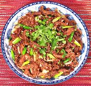

|
Quick Fried BeefChina | ||||
| Serves: Effort: Sched: DoAhead: |
4 side **** hours Prep |
This is not a recipe you want to do. It is geared to street restaurants in China, with huge iron woks over blazing hot fires, and no air polution regulations. The only thing "quick" about it is the frying time for individual strands of beef. | |||
Of course a Beijing street vendor would just put the wok on the hot fire and burn the varnish off with spectacular leaping flames and lots of smoke, but that's not a good idea in your kitchen. This recipe also uses half a roll of paper towels to drain the beef (they burn real nice in the fireplace), and clean-up effort is significant. The results are filling (and fattening), but the beef is still tough, chewy and flavorless. You'd need dips and sauces to make it worth eating. Could I come up with a method that works better? I probably could, but the results aren't worth the bother. If you want something a bit like this that works see Dry Fried Beef Slivers, or Beef & Scallions, or Beef with Celery and Bamboo.
|
12
---- 1/4 1/2 1 ---- 2 1 1 1 ---- 2 1 ar ar 2 ---- 1 1 |
oz
--- c c T --- T T T t --- cl c T --- T t |
Beef, lean (1)
-- Marinade Cornstarch Water Soy Sauce -- Seasoning Vinegar, rice Soy Sauce Rice Wine (2) Water ---------- Garlic Scallions Cornstarch Oil, deep fry Oil -- Garnish Cilantro Sichuan Pepper (3) |
Prep
|